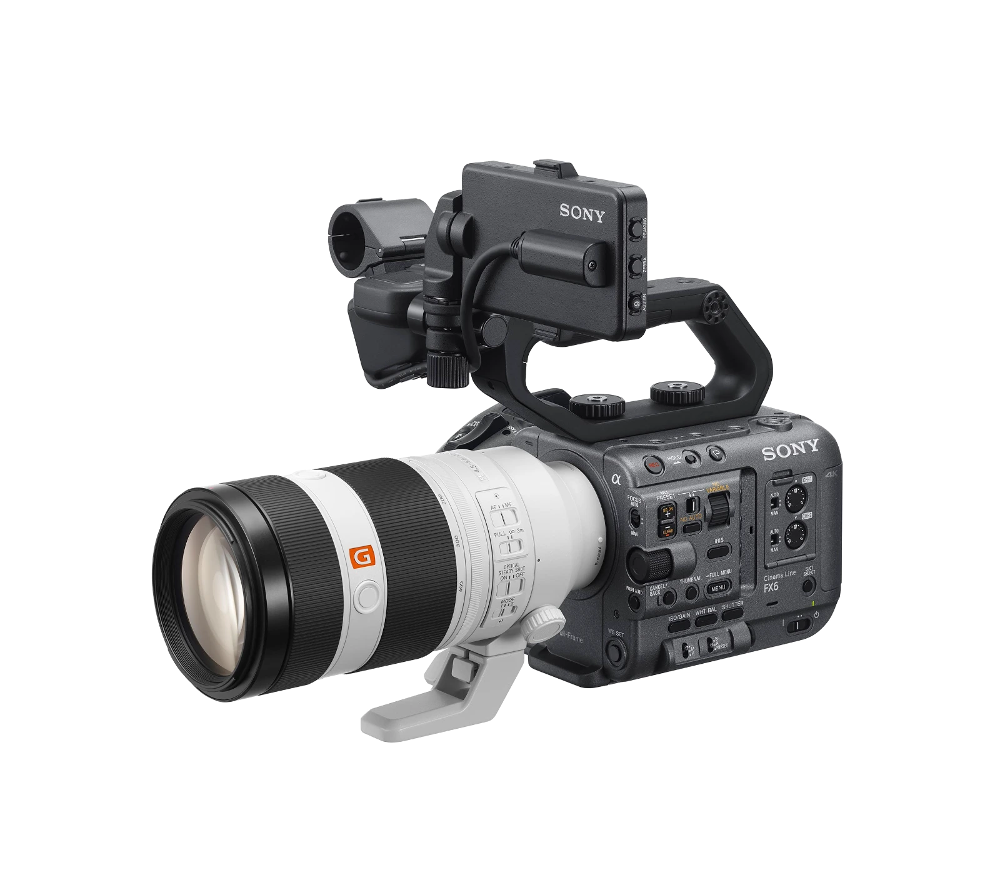

lateframe — video edits, reels and motion

LATEFRAME
Frames that stay.
Every cuthas a reason.Even the late ones.
Pacing, rhythm, color, sound — the details nobody notices until they're missing. That's the work: making the edit feel effortless.
Straight from the feed
On Instagram
New edits, breakdowns and experiments land on the feed first.